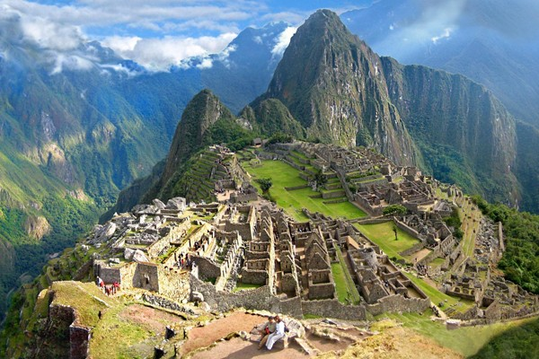
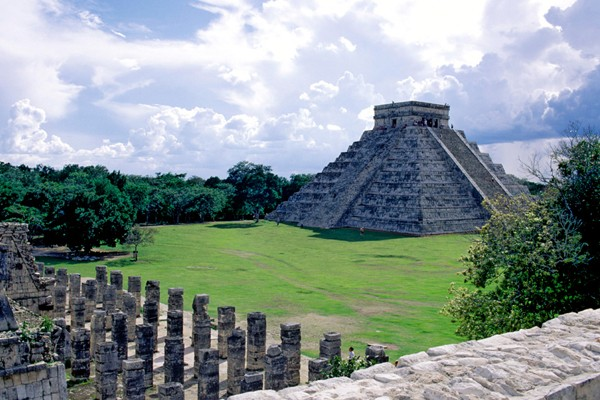

Desde tiempos inmemoriales se sabe que Costa Rica lleva tal nombre no por abundar el oro, o escondidas riquezas minerales, sino porque es tal la belleza de sus costas y litorales, que se la debe considerar el tesoro más grande del país.
La ventaja que ofrece Costa Rica es que las distancias que separan a la capital San José, de las principales playas y cordones costeros, no significan grave problema ni obligan a costosos desplazamientos, lo que se une a la increíble realidad turística de que una persona que viaje en automóvil al ritmo de 80 kilómetros por hora, puede pefectamente consumirse en las aguas del Océano Atlántico a las 8 de la mañana, emprender viaje a las 10, y estar buceando en las aguas del Pacífico a las 5 de la tarde, todavía con el sol de sobra para broncearse un poco más.
Esta verdad automovilística, llevada a los caminos del aire, hace que la misma distancia entre Puerto Limón en el Caribe y Puntarenas en el Pacífico, se cubra en solamente una hora quince minutos de vuelo en avión expreso.
Así queda explicado, cómo es que a algunos turistas, les asombra desde las más altas cumbres montañosas del país, la visión de ambos océanos a la vez.
Geográficamente el desarrollo litoral del país, desde Punta Castilla en lo Boca del Río San Juan (en la frontera norte) hasta lo Boca del Río Sixaola (en la frontera sur) da en el Caribe una longitud de 212 kilómetros y una de 1.016 kilómetros en el Pacífico, desde Mojones (en la frontera norte) hasta el llamado Hito de Burica (en la frontera sur).